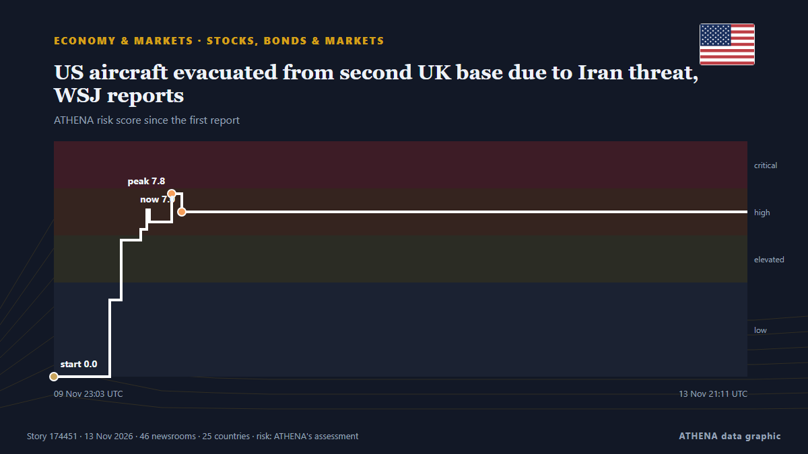

ATHENA Glaux Intelligence — Παγκόσμια ειδησεογραφική ανάλυση — κάθε αριθμός εξηγημένος
Κάθε είδηση, ελεγμένη σε πολλές χώρες.
Το ATHENA Glaux παρακολουθεί 630 ειδησεογραφικά μέσα σε όλο τον κόσμο. Μια είδηση γίνεται επαληθευμένο γεγονός μόνο όταν την αναφέρουν ανεξάρτητα μέσα. Κάθε γεγονός δείχνει ποιος το ανέφερε πρώτος και έναν βαθμό κινδύνου με τους λόγους του.
Αναφορές έρχονται από ανεξάρτητα μέσα — όταν δύο συναντηθούν στην ίδια ιστορία, γίνεται επιβεβαιωμένο γεγονός.
Τρεις τρόποι να διαβάσετε σήμερα
Ξεκινήστε από αυτόν που ταιριάζει στον χρόνο σαςΕπαληθευμένα γεγονότα
Κατά σειρά έκτασης της κάλυψης
- Kremlin confirms Putin, Xi Jinping and Trump to hold trilateral meeting in China on November 1972 μέσα · 37 χώρεςΚίνδυνος 6.2
- US has floated Ukraine ceding Donbas for Nato membership, Zelensky says54 μέσα · 32 χώρεςΚίνδυνος 3.9
- Two tankers on fire after hitting naval mines in the Strait of Hormuz, Iran’s IRGC says52 μέσα · 30 χώρεςΚίνδυνος 3.0
- US envoys Witkoff and Kushner arrive at Kremlin62 μέσα · 29 χώρεςΚίνδυνος 5.4
- Κίνδυνος 6.2
Γραφείο Ανάλυσης
Κάντε μια ερώτηση και διαβάστε τεκμηριωμένη αξιολόγηση μιας βασικής είδησης, μαζί με το τι θα την διέψευδε.
Ανοίξτε το Γραφείο Ανάλυσης ›Πώς ελέγχει το ATHENA μια είδηση
- ΣυλλογήΟι αναφορές φτάνουν από ανεξάρτητα μέσα σε πολλές χώρες.
- ΑντιστοίχισηΌταν δύο μέσα συναντιούνται στην ίδια είδηση, γίνεται επαληθευμένο γεγονός.
- ΕξήγησηΚάθε γεγονός δείχνει ποιος ήταν πρώτος, πόσο εξαπλώθηκε και γιατί ο κίνδυνος είναι αυτός.

Οικονομία & ΑγορέςUS aircraft evacuated from second UK base due to Iran threat, WSJ reports
US military aircraft were evacuated from a second UK base due to threats from Iran. από Arab News
Οι τίτλοι των ειδήσεων παρουσιάζονται στα αγγλικά, όπως δημοσιεύτηκαν.
Treasury Secretary Scott Bessent moves into military housing due to Iranian threats
Treasury Secretary Scott Bessent has moved out of his home in Washington, D.C., and onto a military base out of concern for his safety, including Iranian threats to his life, officials said. από CBS News (World)
Senior Hamas commander killed in Israeli strike in Gaza
Samir Abu Younis, 53, the commander of the Rafah brigade, was killed on Nov 14. από The Straits Times

US envoys Witkoff and Kushner arrive at Kremlin
Kirill Dmitriev added that peacemakers "will prevail" από TASS (English)
Israeli drone strike kills 2 Palestinians in Gaza, and other Mideast news
Mahmoud Abdel-Malek, a 20-year-old goalkeeper for Gaza Sports Club, was killed in an Israeli airstrike on Gaza City. από Al Jazeera English
IRGC's Aerospace targeted US base in Bahrain with 6 drones
Manama - Blasts and sirens rang out over Bahrain and authorities urged residents to seek shelter on Sunday as Iran's Guards said they had attacked a US military base in the Gulf... από Oman Observer
Γεωπολιτική, Πολιτική & Ασφάλεια
Περισσότερα ›Netanyahu says only a unity government can guarantee Israel’s security
Former deputy governor tells Central Banking prime minister’s proposals are ‘stupid’ and ‘crazy’ από Central Banking
- Πόλεμοι & συγκρούσεις
Yemen government forces withdraw from area near Bab el-Mandeb Strait, Houthis in control
- Πόλεμοι & συγκρούσεις
Bahrain intercepts Iranian aerial attacks as Tehran says it attacked US base
- Πόλεμοι & συγκρούσεις
Three ships struck by drones in Black Sea near Romanian shipping canal, PM says
- Εκλογές & πολιτική
Lula invites Marcos to Brazil, pitches deeper Southeast Asia trade ties
Οικονομία, Χρηματοοικονομικά & Αγορές
Περισσότερα ›Pakistan could become world’s sixth-largest economy before 2050: PM Sharif
Dubai: Pakistan could become the world’s sixth-largest economy before 2050, Prime Minister Shehbaz Sharif said on Friday as he called for foreign investment in mineral processing and manufacturing. από Gulf News
- Προβλέψεις & κίνδυνος ύφεσης
Yellow Weather Warning Issued for Heavy Rainfall in Two Regions of Bulgaria
- Χρέος & προϋπολογισμοί
‘Ramayana 2 will do 10 times more’: Ram Gopal Varma claims budget of part 1 is Rs 800 cr
- Τράπεζες & πίστη
Dubai Police bust gang who recruited people to open bank accounts for investment fraud
- Εμπορεύματα & αναταραχή αγορών
Gold and silver prices rise on commodity markets
Εμπόριο, Βιομηχανία & Υποδομές
Περισσότερα ›2 violating oil tankers explode in south Hormuz Strait: IRGC
"One of the vessels is a supertanker; it is currently engulfed in flames following a powerful explosion," the Iranian Revolutionary Guard Corps (IRGC) Navy spokesperson said. από The Jerusalem Post
- Αερομεταφορές, σιδηρόδρομος & οδικές
Vietnam’s digital economy gains momentum with AI adoption
- Ναυτιλία & λιμάνια
EU forces board suspected Russian shadow fleet tanker in Mediterranean
- Ναυτιλία & λιμάνια
New Orleans port sues for control of China-linked tanker that crashed into cruise ship
- Ναυτιλία & λιμάνια
Hormuz Shipping Traffic Remains 65% Below Pre-War Levels
Ενέργεια, Πόροι & Περιβάλλον
Περισσότερα ›Iran says supertanker with 2 million barrels of oil sank in Gulf
LONDON: The world oil market will return to a surplus in the fourth quarter of this year, the International Energy Agency said on Friday, as Middle East exports recover faster than global oil demand… από Business Recorder
- Κλίμα & κλιματική πολιτική
Nations grapple with loss of 1.5C target at UN climate summit
- Κλίμα & κλιματική πολιτική
The climate card China has yet to play
- Κλίμα & κλιματική πολιτική
UN launches Disaster Risk Financing Platform at COP31 to make humanitarian responses faster and more predictable
- Ακραία καιρικά & φυσικές καταστροφές
Respiratory illnesses rise in Gaza as winter arrives, WHO warns
Τεχνολογία, ΤΝ & Κυβερνοασφάλεια
Περισσότερα ›SpaceX Starship returns to landing pad from orbit, acing test for reusable rockets
Starship upper stage’s successful return after orbiting Earth marks a key engineering milestone. από The Business Times
- Επεξεργαστές & υπολογιστική
Jensen Huang carried a secret for more than a year, leading to his downfall
- Τεχνητή νοημοσύνη
Top scorer on South Korean tax exam confesses to cheating with AI
- Διάστημα & δορυφόροι
Ukraine's Zelenskiy escalates criticism of SpaceX over speed caps
- Διάστημα & δορυφόροι
SpaceX’s Starship breakthrough as it’s captured by launch pad after orbit
Επιχειρήσεις, Εταιρείες & Επενδύσεις
Περισσότερα ›Chinese groups showcase culture, technology at London Lord Mayor's Show
Bronek Masojada had a reputation as a tough leader in the insurance world he worked in for three decades. από Insurance Journal
- Εταιρική στρατηγική
'Vietnamese and Japanese people are a great match': Kanagawa governor
- Επιχειρηματικά κεφάλαια
‘Wasn’t a series for batsmen’: Iyer lauds bowlers after India clinch series vs NZ
- Κλάδοι & εταιρικοί κίνδυνοι
Lawyer settles debate on motorists using mobile phone while parked with engine running
- Εταιρική στρατηγική
Air purifier sales surge across country as Delhi-NCR AQI deteriorates
Η σημερινή εικόνα
| 15:00 | 433 |
|---|---|
| 16:00 | 502 |
| 17:00 | 430 |
| 18:00 | 389 |
| 19:00 | 292 |
| 20:00 | 286 |
| 21:00 | 219 |
| 22:00 | 253 |
| 23:00 | 256 |
| 00:00 | 225 |
| 01:00 | 244 |
| 02:00 | 250 |
| 03:00 | 268 |
| 04:00 | 243 |
| 05:00 | 356 |
| 06:00 | 365 |
| 07:00 | 425 |
| 08:00 | 385 |
| 09:00 | 482 |
| 10:00 | 413 |
| 11:00 | 490 |
| 12:00 | 399 |
| 13:00 | 528 |
| 14:00 | 581 |
Κίνδυνος των σημερινών γεγονότων
Με την ευρύτερη κάλυψη
Αναδυόμενα σήματα
- Νέο όνομα στις ειδήσεις · Ενεργό τώραSamir Abu Younis
- Απότομη αύξηση · Ενεργό τώραBab
- Νέο όνομα στις ειδήσεις · Ενεργό τώραNizhnekamskneftekhim
- Απότομη αύξηση · Ενεργό τώραThousands of US
- Απότομη αύξηση · Ενεργό τώραFrancophonie Summit
ATHENA Weekly Risk Picture
Οι μεγαλύτεροι γεωπολιτικοί, οικονομικοί και ναυτιλιακοί κίνδυνοι της εβδομάδας, διασταυρωμένοι και βαθμολογημένοι. Ένα e-mail κάθε Παρασκευή, δωρεάν, στα αγγλικά.
Την εγγραφή τη διαχειρίζεται η beehiiv. Πρώτα επιβεβαιώνετε τη διεύθυνσή σας με e-mail (διπλή επιβεβαίωση) και μπορείτε να διαγραφείτε από κάθε τεύχος.
Το ATHENA στο Telegram
Μπείτε δωρεάν στην ομάδα ATHENA Glaux και λάβετε τις ειδήσεις τη στιγμή που δημοσιεύονται εδώ:
- έκτακτα γεγονότα με κίνδυνο 6 ή περισσότερο
- ωριαία σύνοψη των κορυφαίων γεγονότων
- ενημερώσεις των παρακολουθήσεων κινδύνου (Ορμούζ, Ερυθρά Θάλασσα, Ταϊβάν, κυρώσεις κ.ά.)
- την ημερήσια ενημέρωση κάθε πρωί στις 10:00 (ώρα Ελλάδας)
- εβδομαδιαία προοπτική
- επίσημες προειδοποιήσεις, αναδυόμενα σήματα και κινδύνους σε άνοδο
Πατήστε το κουμπί, ανοίγει το Telegram, πατήστε «Join». Οι αναρτήσεις είναι στα αγγλικά· μπορείτε να τη σιγάσετε ή να αποχωρήσετε όποτε θέλετε. Δεν έχετε Telegram; Είναι δωρεάν στο telegram.org.
Παρακολούθηση κινδύνων
Περισσότερα ›Παγκόσμιοι κίνδυνοι — εβδομάδα 46, 2026 (9–15 Νοε) ›